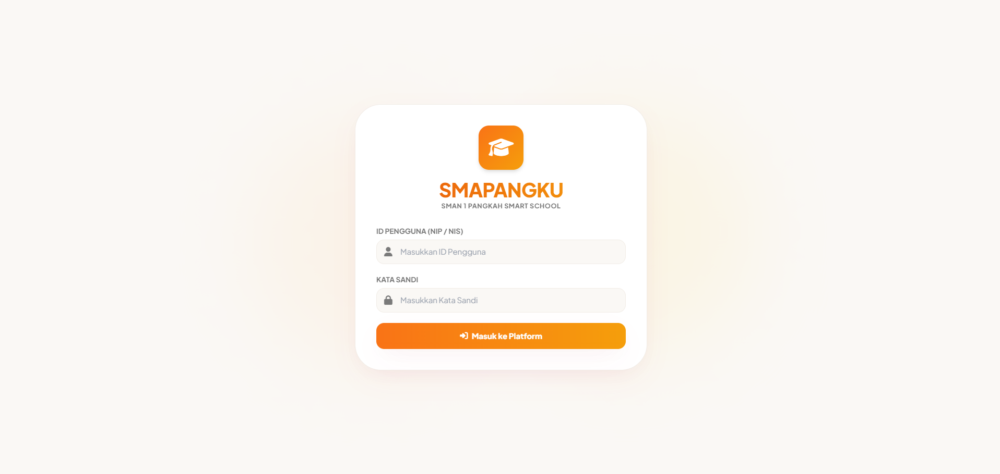

01
Smart School & PWA
SMAPANGKU
Platform Sekolah Pintar • Teknologi Pendidikan
Platform sekolah pintar berbasis web dengan kemampuan Progressive Web App (PWA) untuk menghadirkan aktivitas sekolah dalam satu ekosistem digital terintegrasi.
Fitur Utama:
- Presensi digital berbasis QR Code interaktif
- Ruang kelas online & pembelajaran virtual
- Dukungan PWA (pengalaman setara native app)
- Integrasi modul administrasi kegiatan sekolah
HTML
CSS
JavaScript
React
Supabase